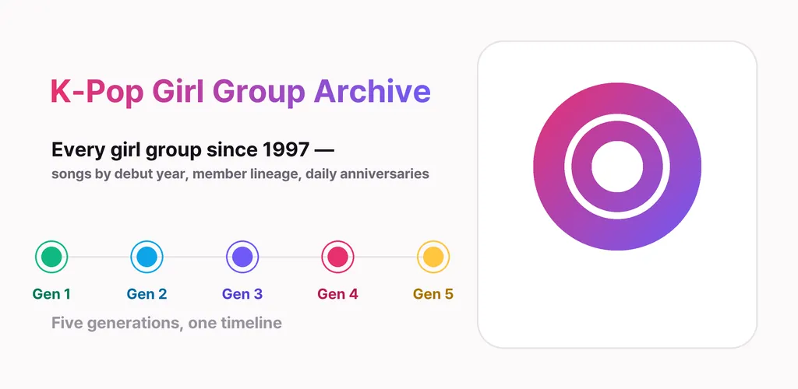
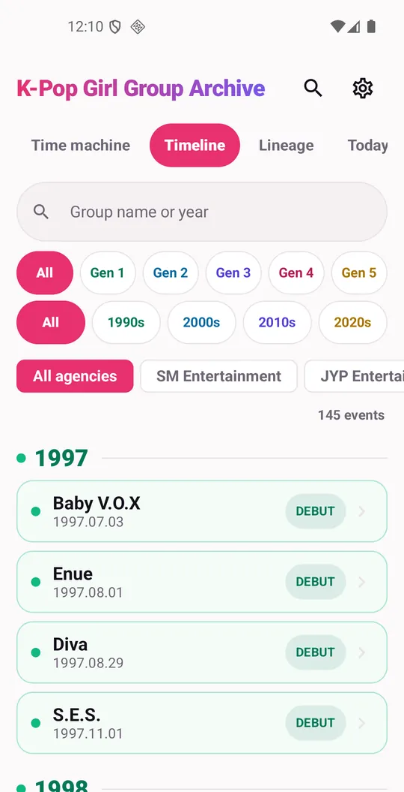
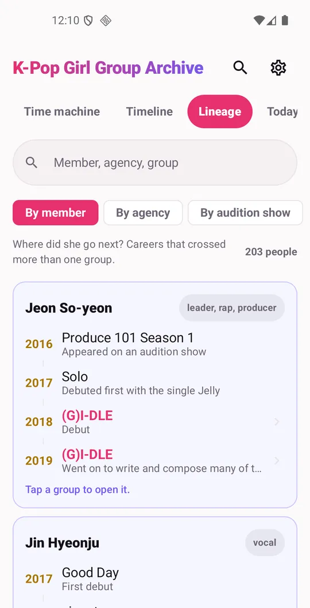
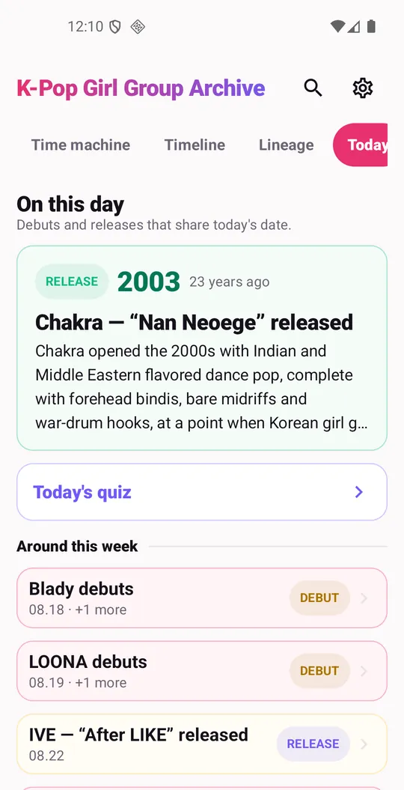
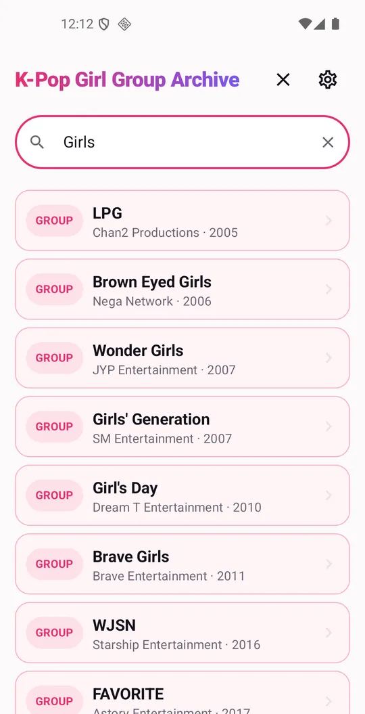
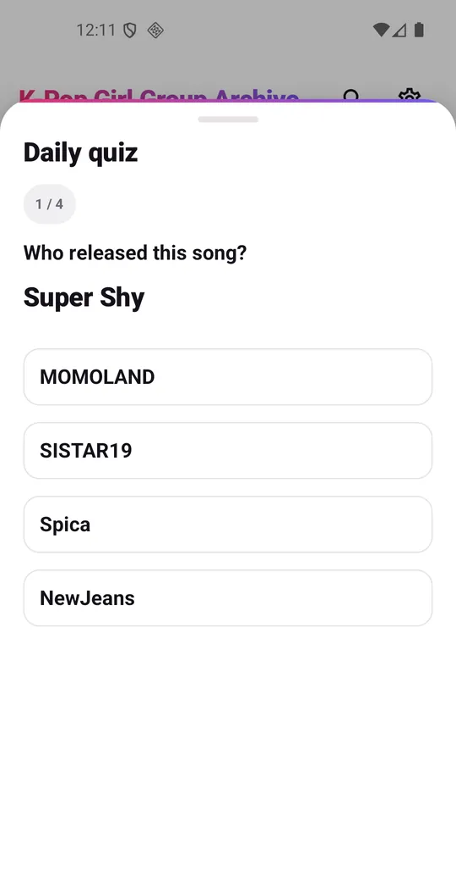

K-Pop Girl Group Timeline
K-pop girl groups by generation. Debuts, songs and where each member went next.






About this app
Menus and screens are in your language; the written notes on songs, groups and members are in English, with the original Korean names alongside.
Every K-pop girl group since 1997, gathered in one place.
Which year that song came out. How many members the group started with. Where each member went after the group wound down. Things that used to take several searches now sit on one screen.
Time Machine — songs by release year
Pick a year and the songs released that year unfold in order. Narrow by decade first, from the 1990s to the 2020s, then drill into a single year. Sort oldest or newest first. Tap a song for its release date, album, and a written note on where it sat at the time.
Timeline — who debuted when
Groups line up by debut date. Filter by generation from 1st through 5th, by decade, or by agency. Following debut order year by year makes it obvious which years were crowded.
Lineage — where each member went next
This is why the app exists. One person's path is drawn across the teams they passed through, in order. See members who were in two or more groups, the run of groups one agency put out across eras, and how each audition show's cast scattered into different teams.
On This Day
Groups that debuted today and albums released today, refreshed daily, with a short quiz and an optional evening reminder.
Search and Library
Search by Korean name, official English name, romanization, or former name — and the written notes are searchable too. Save anything to your library.
What's inside
125 groups, 404 songs, 850 members, 81 agencies, 529 anniversaries. Every group and every song carries an original write-up. Where sources disagree, the app says so instead of hiding it.
Offline
The data ships inside the app, so everything reads without a connection. Album covers and videos load only when you are online.
Notice
This is an unofficial, fan-made reference app. It is not affiliated with, endorsed by, or sponsored by any artist, agency, or label. It contains no member photographs and no song lyrics. Album covers are shown from Apple Music with attribution, and videos play through the official YouTube player. For corrections or takedown requests, write to thefacegood1@gmail.com.
This app is free and supported by ads.
Android · free with ads · Developer: RealTunaLove · Store listing in 17 languages